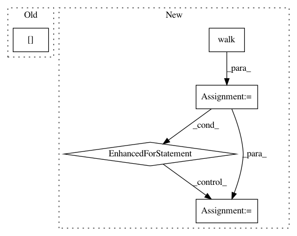

583deefa3a0d9d320293ea3194433956269a4a63,chiron/utils/extract_sig_ref.py,,extract,#Any#,17
Before Change
if len(reference) > 0:
ref_file = open(os.path.join(ref_folder, os.path.splitext(file_n)[0] + "_ref.fasta"), "w+")
ref_file.write(reference)
print("Extracted " + (os.path.join(raw_folder, os.path.splitext(file_n)[0] + ".signal")))
def extract_file(input_file):
After Change
if not os.path.isdir(ref_folder):
os.mkdir(ref_folder)
if FLAGS.recursive:
dir_list = os.walk(root_folder)
else:
dir_list = [root_folder]
for dir_tuple in tqdm(dir_list,desc = "Subdirectory processing:",position = 0):
if FLAGS.recursive:
directory = dir_tuple[0]
file_list = dir_tuple[2]
else:
file_list = os.listdir(dir_tuple)
for file_n in tqdm(file_list,desc = "Signal processing:",position = 1):
if FLAGS.recursive:
full_file_n = os.path.join(directory,file_n)
// print(file_n)
else:
full_file_n = os.path.join(root_folder,file_n)
if file_n.endswith("fast5"):
try:
raw_signal, reference = extract_file(full_file_n)
count += 1
if len(raw_signal) == 0:
raise ValueError("Failed in extracting " + (
os.path.join(raw_folder, os.path.splitext(file_n)[0] + ".signal")))
except:
// logging.getLogger(__name__).error("Cannot extact file %s", file_n, exc_info=True)
continue
signal_file = open(os.path.join(raw_folder, os.path.splitext(file_n)[0] + ".signal"), "w+")
signal_file.write(" ".join([str(val) for val in raw_signal]))
if len(reference) > 0:
ref_file = open(os.path.join(ref_folder, os.path.splitext(file_n)[0] + "_ref.fasta"), "w+")
ref_file.write(reference)
def extract_file(input_file):
try:
input_data = h5py.File(input_file, "r")
except IOError:
In pattern: SUPERPATTERN
Frequency: 3
Non-data size: 5
Instances
Project Name: haotianteng/Chiron
Commit Name: 583deefa3a0d9d320293ea3194433956269a4a63
Time: 2018-05-07
Author: havens.teng@gmail.com
File Name: chiron/utils/extract_sig_ref.py
Class Name:
Method Name: extract
Project Name: tensorflow/datasets
Commit Name: 72dd67421c060a4ff991e0b7316deb1c429e0f23
Time: 2020-03-22
Author: thealmightylion.madhav@gmail.com
File Name: tensorflow_datasets/scripts/replace_fake_images.py
Class Name:
Method Name: rewrite_zip
Project Name: facebookresearch/ParlAI
Commit Name: 9fc989afc19ec56ccbf0b7b966d34bfdd254c651
Time: 2017-05-06
Author: ahm@fb.com
File Name: parlai/tasks/opensubtitles/build.py
Class Name:
Method Name: create_fb_format